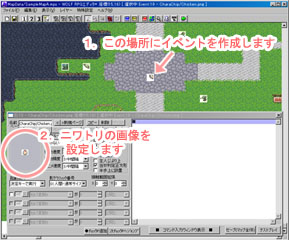
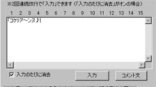
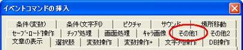
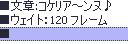
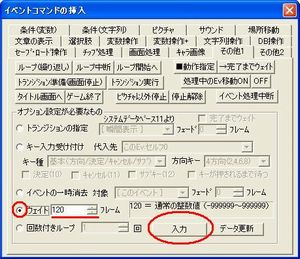
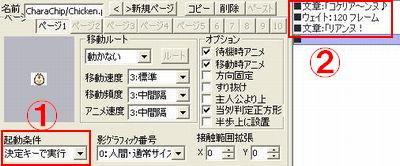
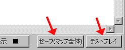
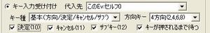
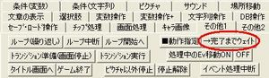

・まずマップ選択
切り替えて下さい。
・適当な場所にイベントを作成して
ニワトリの画像を設定しておきます。
（ここでは右の画像の位置に設置）
→ 分からないときは、
◆新しいイベントを作ってみたいの
【1】〜【5】までの手順をまねてください。

【目標】
ウェイト処理を使って待ち時間を作ります。
サンプルゲーム内の「サンプルマップA」内に、
話しかける「コケリア〜ンヌ」としゃべり、
2秒程度の間をおいて「リアンヌ！」と
しゃべるニワトリのイベントを作ります。
| 【1】 ・まずマップ選択 切り替えて下さい。 ・適当な場所にイベントを作成して ニワトリの画像を設定しておきます。 （ここでは右の画像の位置に設置） → 分からないときは、 ◆新しいイベントを作ってみたいの 【1】〜【5】までの手順をまねてください。 |  |
| 【2】 ・ニワトリが「コケリア〜ンヌ♪」としゃべるように 文章の表示処理を追加します。 → 分からないときは、 ◆新しいイベントを作ってみたいの 【7】〜【10】の手順をまねてください。 |
 |
| 【3】 ・イベントコマンドの挿入ウインドウを開き、 「その他1」のタブをクリックします。 |
 |
| 【4】 ・左下にあるウェイトを選択し、 隣の「ﾌﾚｰﾑ」と書かれたテキストボックスに 120と入力します。 ・右下の入力ボタンをクリックしたあと 文章:「コケリア〜ンヌ♪」の下に 「■ウェイト:120フレーム」と追加されているか 確認してください。  |
 |
| 【5】 ・「リアンヌ！」としゃべるように 文章の表示処理を追加します。 |
| 【6】 処理が完成しました。 1:左下、起動条件が「決定キーで実行」 2:右側、イベントコマンド表示欄に ■文章:コケリア〜ンヌ♪ ■ウェイト:120フレーム ■文章:リアンヌ！ と表示されているか確認してください。 |
 |
| 【7】 「セーブ（マップ全体）」をクリックした後、 「テストプレイ」をクリックしてください。 |
 |
| 【8】 ニワトリに話しかけて 「コケリア〜ンヌ♪」と表示されてから 「リアンヌ！」と表示されるまでに 待ち時間があれば成功です。 お疲れ様でした。 |


＜執筆者：PerryKarn＞